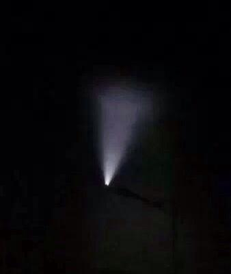

【美国】【歷史】美国小官僚的大错误
2014-07-28 21:02:00
原文网址：https://blog.udn.com/MengyuanWang/108908618
中共在七月23日进行反导试験后，美国国务院副发言人（Deputy Spokesperson）Marie Harf召开记者会，称中共“对世界各国所依赖的外太空环境的长期安全和可持续性构成了威胁”云云。美国向来是只许自己放火，不许别人点灯，这类八股大家见怪不怪；真正吓人的是Marie Harf把这次试験称为无毁伤的反卫星试験（Non-destructive Anti-Satellite Test），这是一个很低级的错误。中共的确进行了一个很可能是反卫星导弹的测试，但是那是七月9日在太原举行的。美国的间谍卫星满天飞，不可能会弄不清楚，所以这很明显地是在中央情报局通报给国务院的过程中把两件事搞混了，错误是出在某个写公文的小官僚身上。
七月9日民眾拍到的反卫星飞弹
说起中央情报局送出错误情报导致严重的后果，大家自然会想起2003年小布希搞的伊拉克侵略戦争；其实那次是布希派人到中央情报局强迫编出错误的分析，和这类小官僚自己无心出的错大有不同。歷史上无心错误导致美国对外开戦早有先例：1898年的美西戦争就是因为美国戦舰缅因号（Maine）在古巴意外爆炸，给美国人一个极佳的藉口来对西班牙宣戦；不过美国觊觎西班牙在亜洲和美洲的属地已久，那一仗早晚总是要打的，美国自己也不觉得那次情报分析错了有什么不好。另一个前例则没这么光彩，那就是越戦的起点：东京湾事件（Gulf of Tonkin Incident，中共称之为“北部湾事件”）。
东京湾事件中，USS Maddox的航线
1964年八月2日，詹森（Johnson）总统还在考虑是否对北越宣戦，驱逐舰USS Maddox被送到北越领海边缘搜集情报，闯进北越领海后，遭遇到三艘北越鱼雷艇的拦截，在领海线外主动开火把这些小艇痛揍了一顿，打死了四名北越士兵，Maddox自己毫髮无伤。依美国的传统逻辑，我们来打你是你的荣幸，你敢还手就是大不敬，可是詹森觉得事件还不够严重，于是两天后Maddox和另一艘驱逐舰USS Turner Joy又重回了东京湾，任务是“Show the Flag”，也就是示威。这一次又直接开进了北越领海，不幸的是当天狂风巨浪，在黑夜中北越的小艇根本不敢出海，而Maddox的雷达和声纳受波浪干扰，不断地出现假信号，于是花了四个小时火力全开，到半夜一点，舰长Herrick才下令停火，清点戦场，那当然是什么都没有的。Herrick做为一个职业军官，倒也还诚实，老老实实地报告了前因后果，结论是他不能确定北越是否出动了舰艇。本来美军来示威，敌人缩头做乌龟，应该大事化小，小事化无，皆大欢喜，可是第二天NSA（National Security Agency，国家安全局，就是最近闹出监听全球电讯丑闻的那个机构）截听到北越的电报，翻译员把原文里面讨论八月2日受损情况的越南文翻译错了，变成了北越“再次”攻撃。这虽然是个低级的错误，因为当时总统急着要情报，所以没有经过审察第一时间就以快报送到白宫，白宫当然回头要求完整的报告，这时NSA在越南的越南文主管才有时间仔细读了手里的资料，马上发现了错误。他要是老实承认，一顿训斥是免不了的，说不定还要记大过，一辈子的前途就完蛋了，所以乾脆将错就错，写了一篇情文并茂的报告，指证歷歷，说是北越絶对攻撃了Maddox和Turner Joy，当天詹森总统就发表紧急演说，指责北越进行了珍珠港式的“偷袭”；参议员Morse只看到了Herrick的报告，向詹森抗议证据不足，但詹森以有絶对机密的证据为理由，坚不妥协，六天后美国国会就在无法験证NSA报告的前提下，授权詹森总统派兵进驻越南，越戦由此爆发。
这个离奇的故事是百分之百的史实，甚至Wikipedia都有了记载。不过美国自已到2000年才完全搞清楚其究竟，那个害死了五万八千名美军士兵的NSA主管早就光荣退休了。本来这段歷史还有可能帮助美国避免侵略伊拉克的大错误，可是正因如此，小布希政府把它压着不许公开，直到2005年，美国全国都知道被小布希骗了，媒体才敢发表这段故事（第一个发表的是支持民主党的纽约时报）。其实这故事的另一个教训是絶对机密代表着絶对的权力，而絶对的权力当然会造成絶对的腐化，可是欧巴马显然是不读歷史的，仍然放任NSA横行天下；物必自腐而后虫生，美国的衰败其实是自作孽。